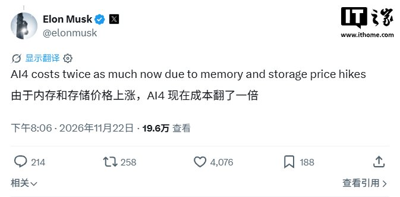

新闻 · 2026-11-23 12:00
马斯克称存储芯片涨价使特斯拉 AI4 车载电脑成本翻倍
特斯拉CEO马斯克11月22日称，因全球DRAM内存和NAND闪存价格飙升，特斯拉AI4车载电脑物料成本已翻倍。他未透露具体成本数值或一年前成本。同时回应AI5芯片将用于Optimus机器人，汽车仍用AI4。

来源与核验
单一信源报道，未交叉核实
特斯拉CEO马斯克11月22日称，因全球DRAM内存和NAND闪存价格飙升，特斯拉AI4车载电脑物料成本已翻倍。他未透露具体成本数值或一年前成本。同时回应AI5芯片将用于Optimus机器人，汽车仍用AI4。

单一信源报道，未交叉核实